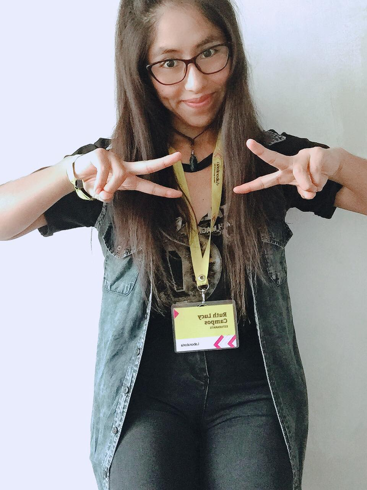
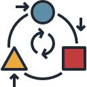

CSS3
JavaScript
HTML5
Git
GitHub
GitLab
React
Redux
MaterialUI
Jest

Node
Firebase
Figma
SASS

VUEJS

Vuetify
Sobre Mí
Front-end Developer egresada de Laboratoria y bachiller en Ingeniería de Sistemas con sólida formación en desarrollo web y diseño de interfaz de usuario, he desarrollado aplicaciones web utilizando metodologías ágiles para el desarrollo de proyectos de calidad y me encanta aplicar mis conocimientos para cambiar el mundo de manera positiva.
Habilidades
-
Trabajo en Equipo
-

Adaptación al cambio
-

Gestión del tiempo
-
Autodidacta
Mis proyectos
Hecha un vistazo a mis proyectos